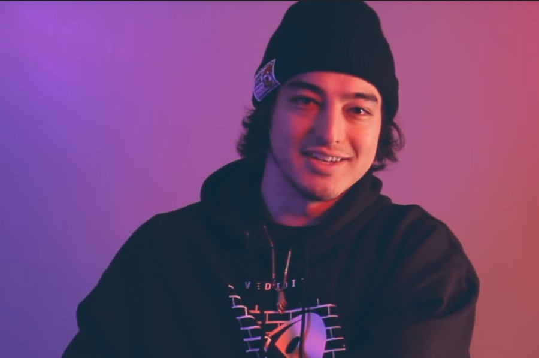

Joji is an uprising music artist
Joji is an uprising music artist
George Miller was born on 18 September 1992, in Osaka, Japan, of Japanese as well as Australian descent. He is a singer, record producer, rapper, songwriter, and former internet personality, best known initially for earning popularity through his YouTube persona Filthy Frank. He also produced comedy music under the name Pink Guy, and was responsible for the creation of numerous memes, as well as popularizing the Harlem Shake. He later retired his YouTube channel to focus on his music career, now performing under the name Joji.
Joji grew up in Osaka, and attended the international Canadian Academy located in Kobe, Japan. He completed his studies there in 2012, and decided to travel to Brooklyn, New York US at the age of 18, and took up his college education there. Wanting to pursue his passion for music, he created the YouTube channel called DizaztaMusic containing music and comedic content. The channel started to gain a lot of ground when he created the character Filthy Frank, whom he describes is the anti-vlogger of YouTube. The channel would quickly gain popularity, attracting over 800,000 subscribers, now up to two million. He also launched another channel called TVFilthyFrank which had various series featuring Frank as the host, quickly earning over 6 million subscribers, then a third channel called TooDamnFilthy, which had series such as Japanese 101 and Cringe of the Week.
Read more about Joji